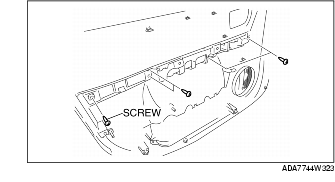
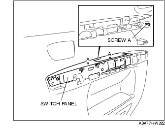

Switch panel removal/installation
1. Remove the front door trim or rear door trim. (See FRONT DOOR TRIM REMOVAL/INSTALLATION.) (See REAR DOOR TRIM REMOVAL/INSTALLATION.)
2. Remove the screws.

3. Remove tabs A, B and the trim cover using a tape-wrapped flathead screwdriver.

4. Remove screws A, and then remove the switch panel.

5. Install in the reverse order of removal.